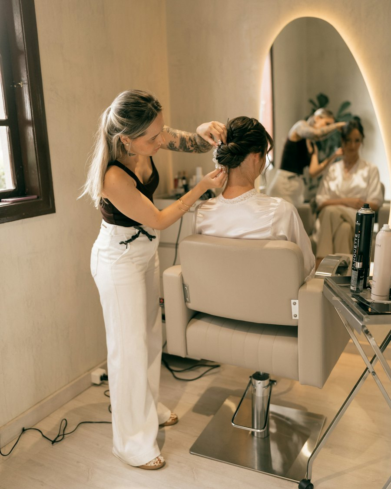
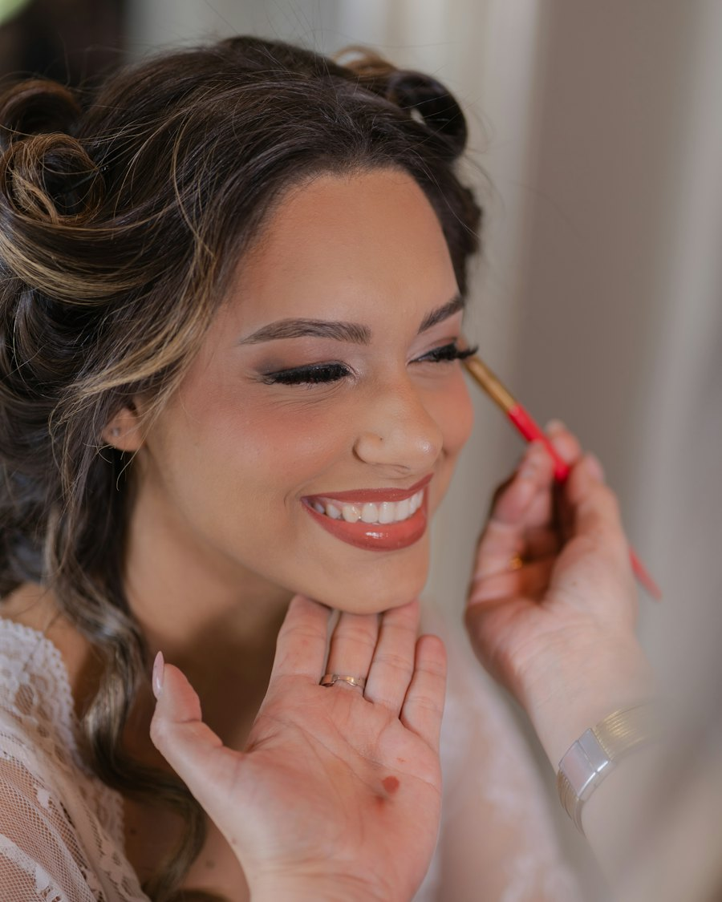
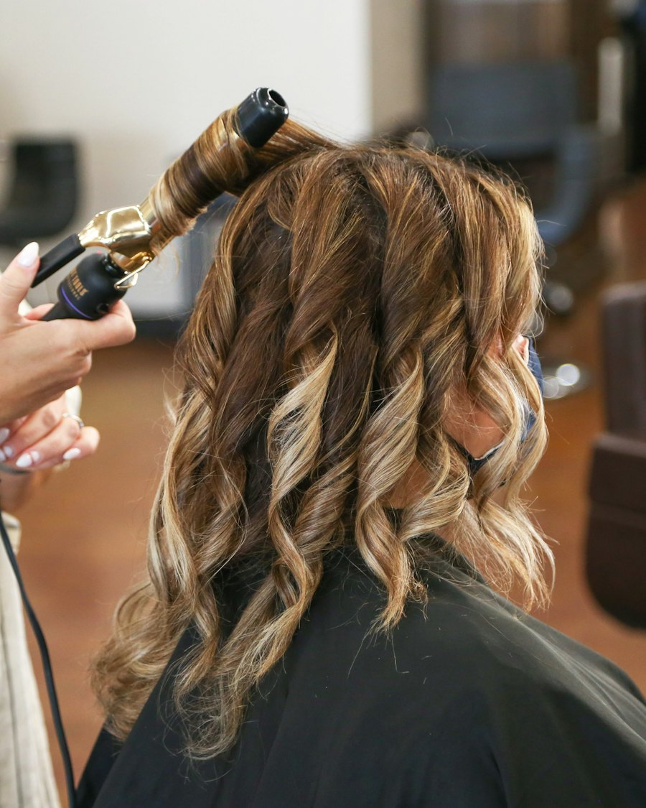
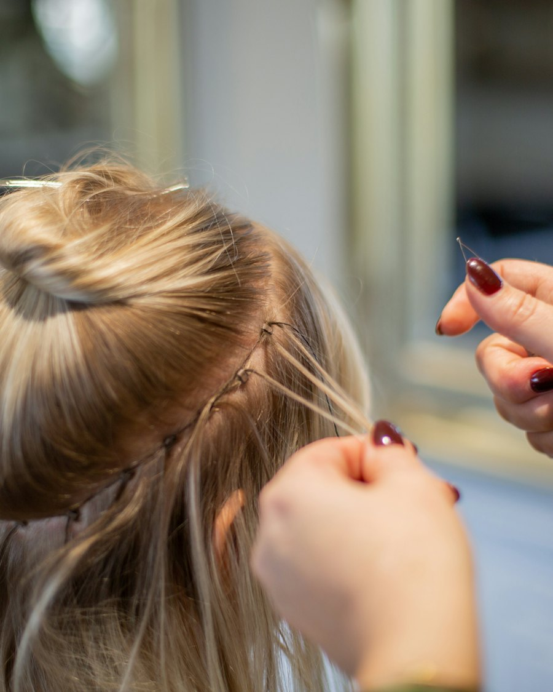
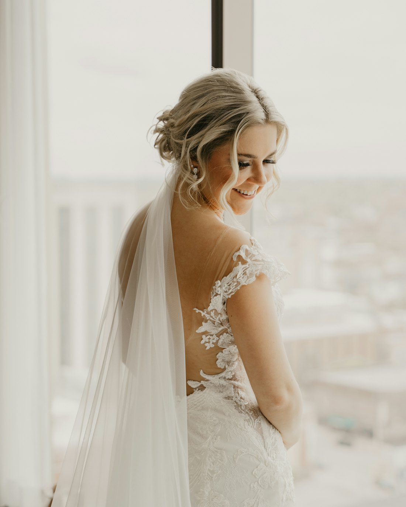
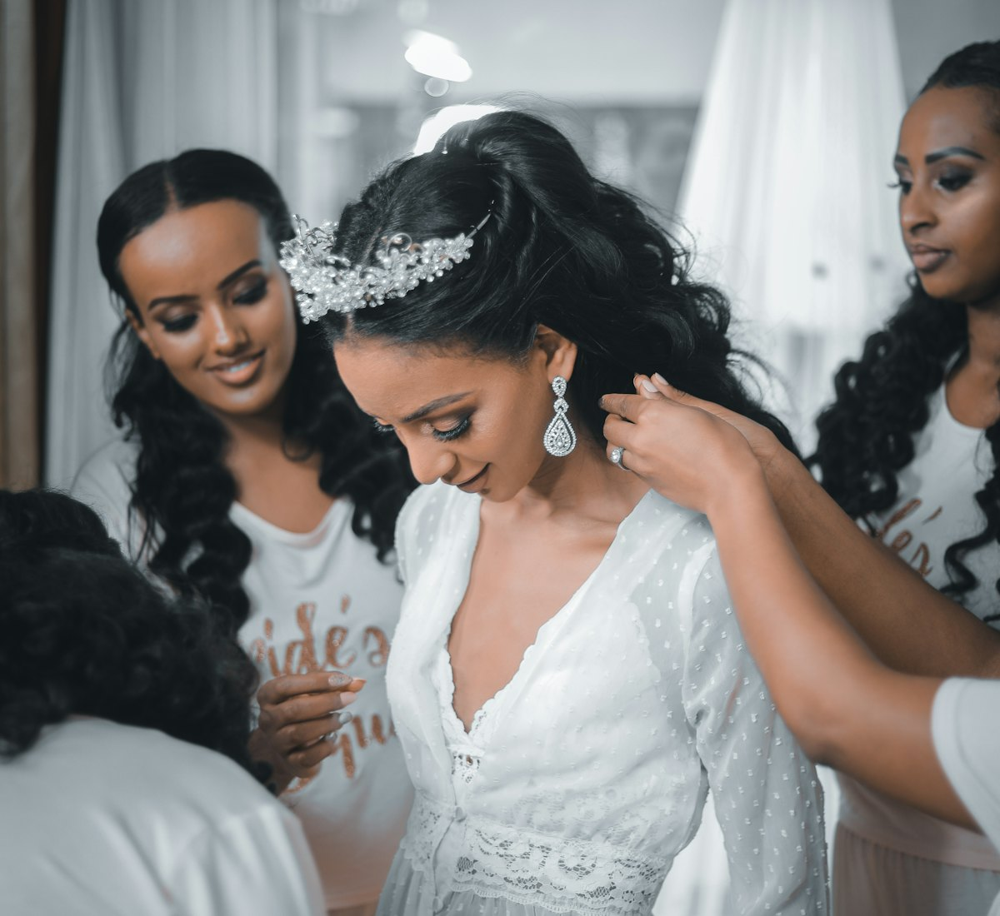
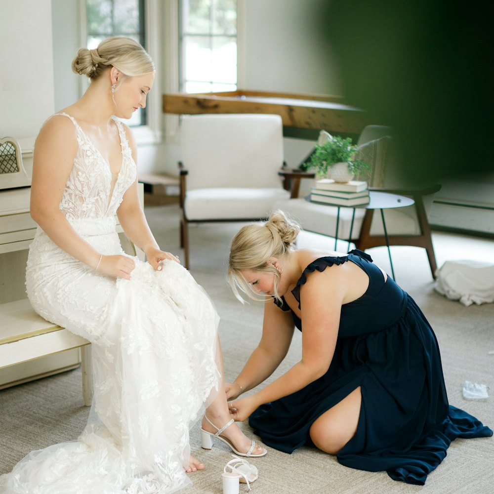

Dia da noiva
Cabelo e maquiagem da noiva no mesmo lugar, no dia do casamento.
PerguntarMaquiadora especialista em noivas e cabeleireira. Penteado, pele, olhos e o dia da noiva inteiro no mesmo lugar, no Jardim Santa Luiza.
10,5 mil seguidores no Instagram, perfil verificado
Coloque a data do casamento e veja quantos dias faltam. Data de noiva costuma ser reservada com antecedência, então vale consultar a agenda da Leticia cedo.
Os serviços que a Leticia e o Lefran Concept mostram no Instagram. Toque em um deles para perguntar direto no WhatsApp.

Cabelo e maquiagem da noiva no mesmo lugar, no dia do casamento.
Perguntar
A especialidade da Leticia: uma make que dura da cerimônia à festa.
PerguntarPreso, semipreso ou solto, pensado junto com o véu e o vestido.
PerguntarPreparação, correção de cor e acabamento para a pele aparecer bem nas fotos.
PerguntarDo esfumado leve ao marcado, para madrinhas, formandas e festas.
PerguntarCabelo iluminado com mechas feitas no salão.
Perguntar
Corte feminino para o dia a dia ou para chegar pronta ao casamento.
Perguntar
Comprimento e volume para quem quer o cabelo longo no grande dia.
PerguntarFotos ilustrativas. No site final entram fotos das noivas e dos cabelos feitos pela Leticia.

Texto de exemplo. No site final entram as etapas exatas que a Leticia segue com as noivas.
O portfólio completo está no Instagram da Leticia, com destaques de noivas, feedbacks, pele completa e olhos esfumados.


A Leticia atende no
Lefran Concept, salão de beleza especialista em noivas.
Aberto agora
| Terça | 8h às 20h |
|---|---|
| Quarta | 8h às 20h |
| Quinta | 8h às 20h |
| Sexta | 8h às 20h |
| Sábado | 8h às 20h |
| Domingo | Sem horário divulgado |
| Segunda | Sem horário divulgado |
R. Pedro Zaccaria, 535
Jardim Santa Luiza, Limeira (SP)
Texto de exemplo. No site final entram as respostas da Leticia.
Quanto antes, melhor: sábados de casamento costumam ser os primeiros a fechar. Consulte sua data pelo WhatsApp.
A prova serve para testar a make e o cabelo antes do casamento e ajustar o que for preciso. Pergunte como funciona na agenda da Leticia.
Pergunte pelo WhatsApp quantas pessoas dá para arrumar no mesmo dia, junto com a noiva.
No Lefran Concept, na R. Pedro Zaccaria, 535, Jardim Santa Luiza, em Limeira.
Mande a data do casamento e o horário da cerimônia para a Leticia pelo WhatsApp.
Consultar minha data